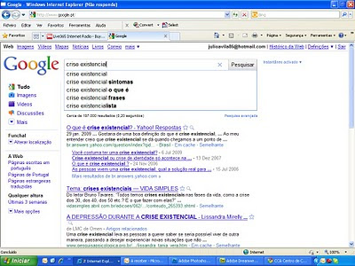

A verdadeira crise
Chamem-me estranho e digam que tenho pancadas e pedirei para me dizerem algo de novo. Então é assim: às vezes fico farto da internet e já não sei que páginas ver. Então abro o Google e pesquiso, ou algo que não sei o que é, ou algum termo usado com uma frequência já considerável, mas ouvido e falado sem muita certeza da definição. Vai daí, "vamos ver o que é que esta gente diz" sobre a expressão ou tema em causa. Vejam o que estava a pesquisar quando o computador decidiu encravar.
(esta cena das imagens tá-me a irritar. fuuuuuuuuuu... ok, não dá para meter um print screen em condições aqui. este é um post impróprio para míopes)
Coincidências... por acaso até existem.
como internet explorer?!?!?!?!